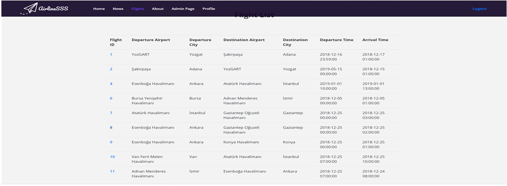

Parts Implemented by Muhammed Said Dikici¶

Selecting a flight from Flight List¶
{kind=link}
User can select his/her flight from Flight List by clicking Flight ID.
Buy Ticket Page¶
{kind=link}
After selecting flight user can buy his/her ticket after selecting class(economy or business) by clicking buy button.
Bought Notification¶
{kind=link}
After buying a ticket a notification shows up at the bottom of the page saying buying was successful or not.
View Your Tickets Button¶
{kind=link}
From profile page user can see his/her balance and view his/her tickets by clicking View your tickets button.
Ticket List¶
{kind=link}
At the ticket list page user can see his/her tickets’ information including check-in status.
Check-in Page¶

By clicking check-in button from view tickets page user goes to check-in page. From that page user can select his/her seat number and complete the check-in process.
Checked-in¶

After selecting seat number user can click the check-in button, after that a notification shows up and says either check-in was successful or not.